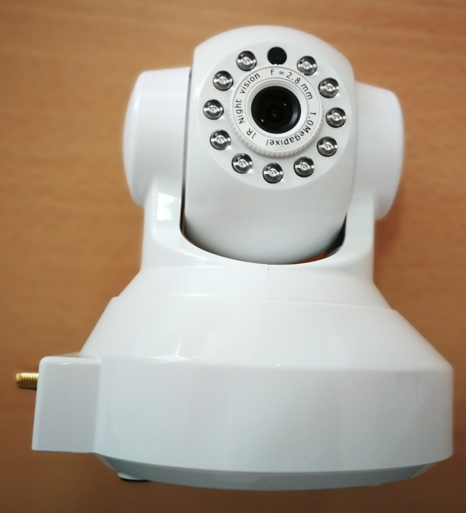

La televisión funciona en coordinación con la cámara, esta última reconoce al usuario, esto hará qué la televisión establezca una aplicación u otra en función del perfil qué se tenga. ¿Por qué no la probais al terminar?
¿Por qué no la probais al terminar?
